REELS / 01Instagram
POV:當老細叫我宣傳明報出版社攤位
載入 Instagram 預覽
如預覽未能顯示，可前往 Instagram 查看原帖。
Portfolio
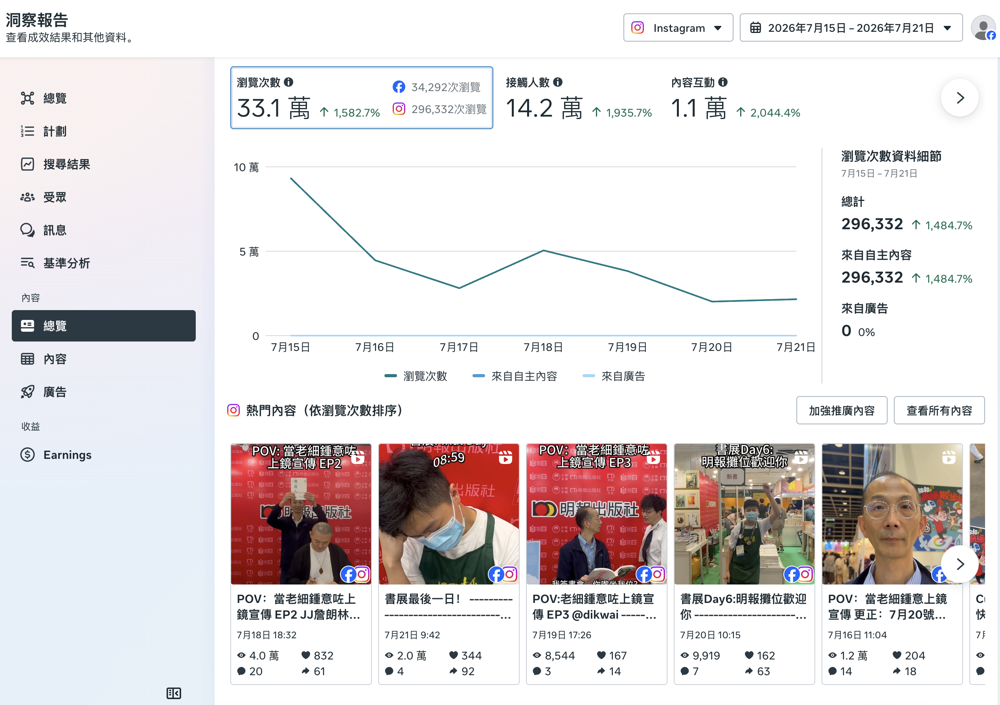
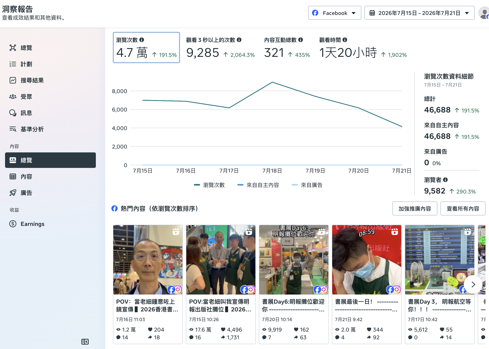
我的職責負責編劇及參演，使用 CapCut、Final Cut Pro 剪輯，並透過 Meta Business Suite 發布；書展短片每條由拍攝到發布約 30 分鐘。
如預覽未能顯示，可前往 Instagram 查看原帖。
如預覽未能顯示，可前往 Instagram 查看原帖。
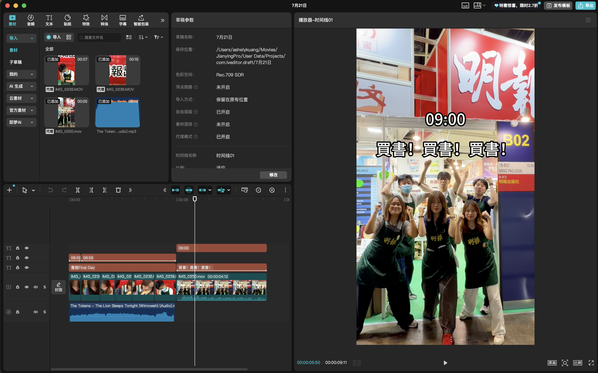
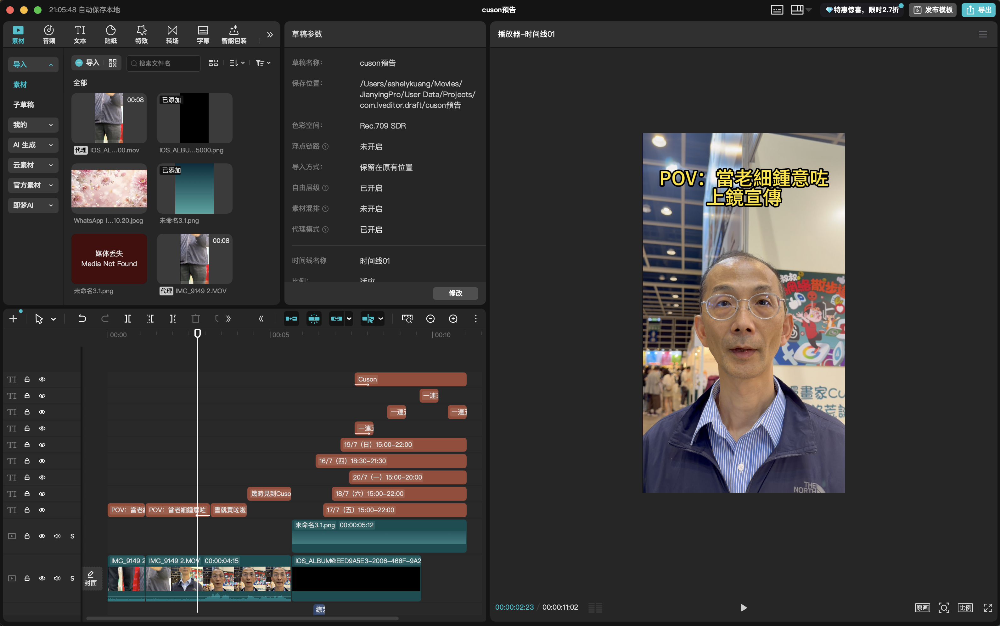
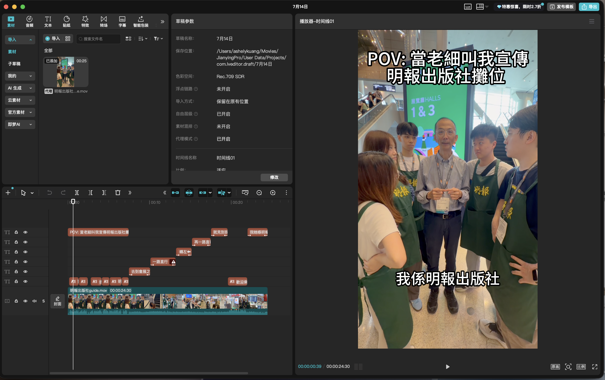
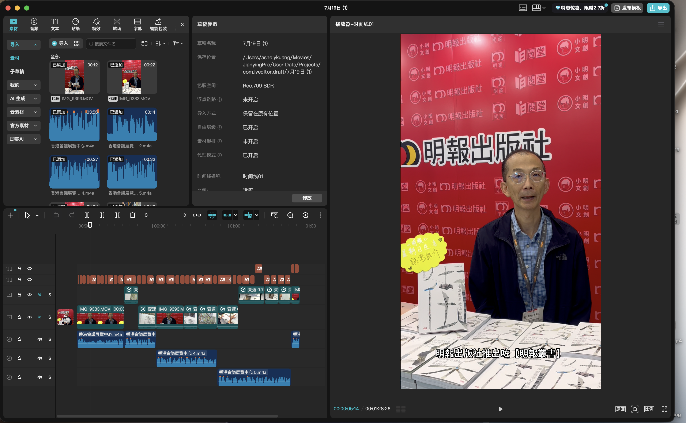
我的職責撰寫文案、排版及編排廣告刊登日期。
我的職責參與品類討論及訂購。
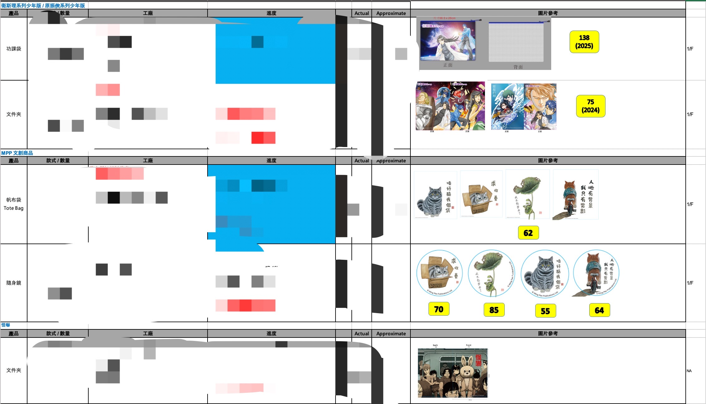
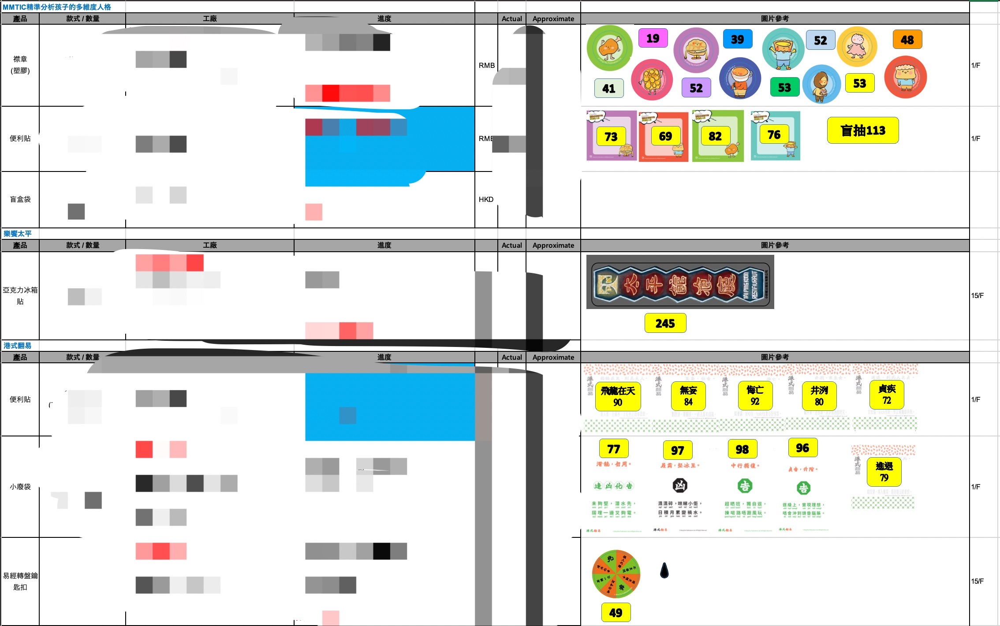
我的職責負責創意構思、文案撰寫及初步佈局草圖設計。
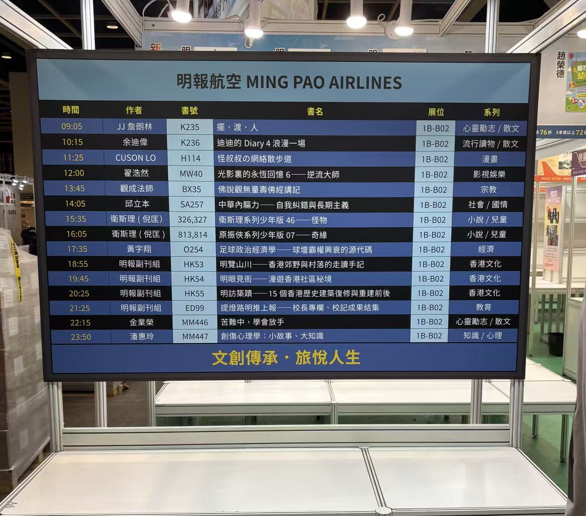
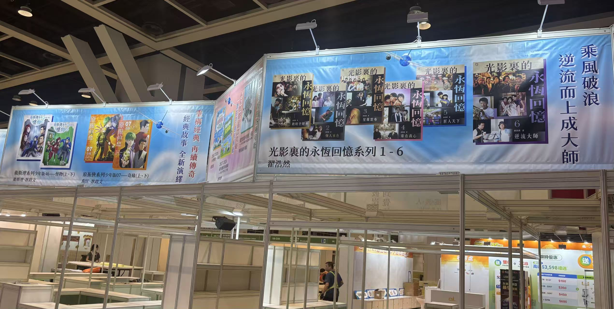
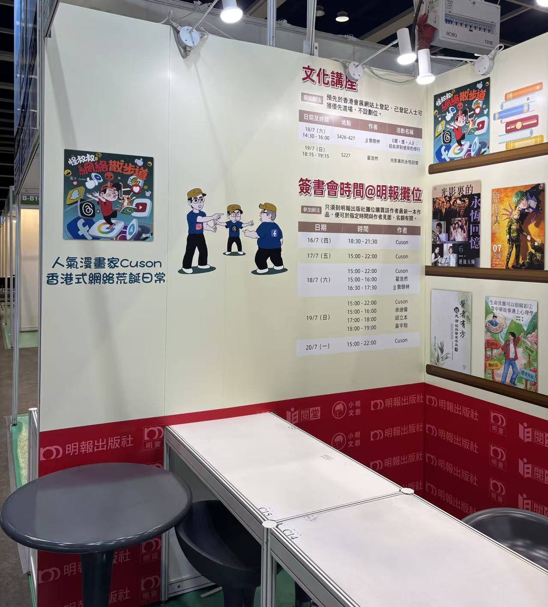
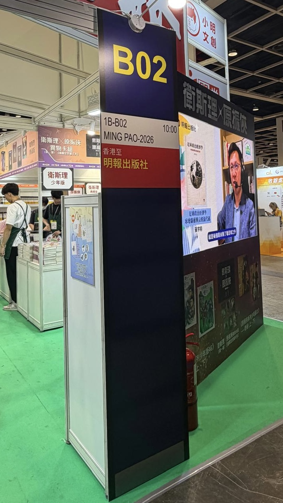
我的職責負責規劃活動流程、準備物料、邀約客人、預訂場地及活動執行。
我的職責負責用戶調研、收集數據、與外部企業客戶初步洽談，以及撰寫會員權益規則和客服文檔。
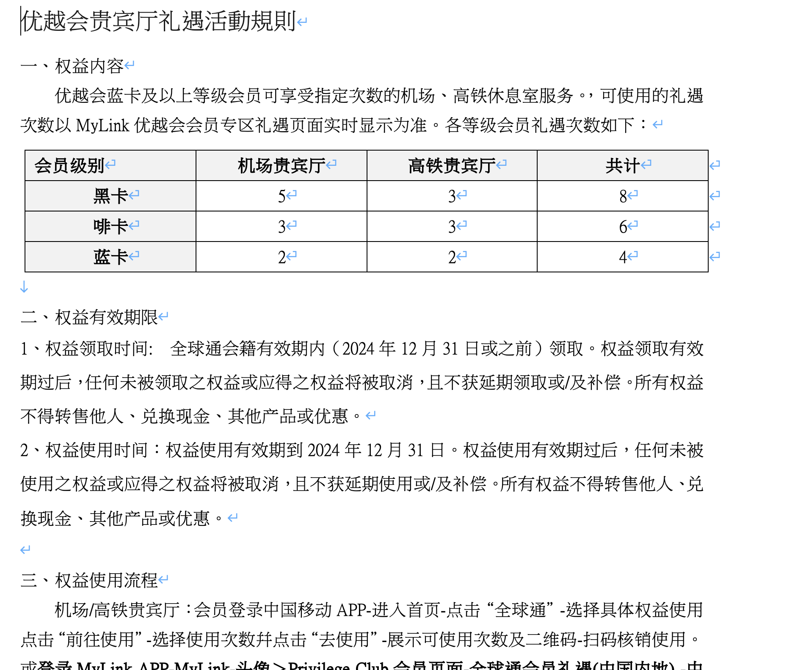
工商管理學院 · 應用經濟學理學碩士
2026 年 9 月社會科學學士（經濟學）
2025 年 5 月・全額獎學金經濟學系交換生
2024 年 9–12 月Canva · CapCut · Final Cut Pro · Premiere Pro · Photoshop · Meta Business Suite · MS Office · Stata · ChatGPT · Claude
粵語、普通話：母語・英語：IELTS 6.5
02
社交媒體帖文
+我的職責使用 Canva 設計、撰寫文案，並透過 Meta Business Suite 排程及發布。
2026香港書展宣傳
載入 Instagram 預覽 +
如預覽未能顯示，可前往 Instagram 查看原帖。
新書宣傳《原振俠系列少年版07》
載入 Instagram 預覽 +
如預覽未能顯示，可前往 Instagram 查看原帖。
新書宣傳《迪迪的Diary4 浪漫一場》
載入 Instagram 預覽 +
如預覽未能顯示，可前往 Instagram 查看原帖。
新書宣傳《醫言有理》
載入 Instagram 預覽 +
如預覽未能顯示，可前往 Instagram 查看原帖。
文化講座宣傳1
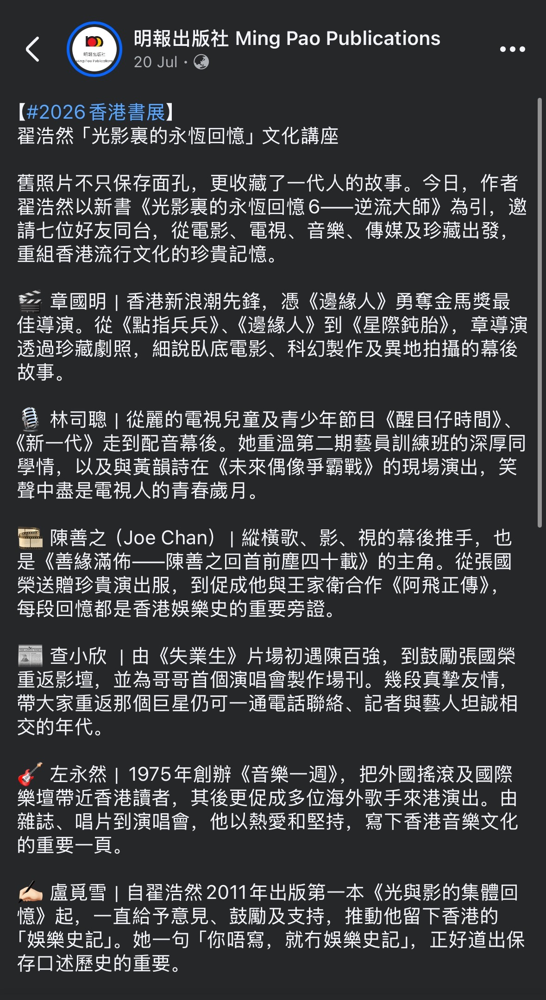